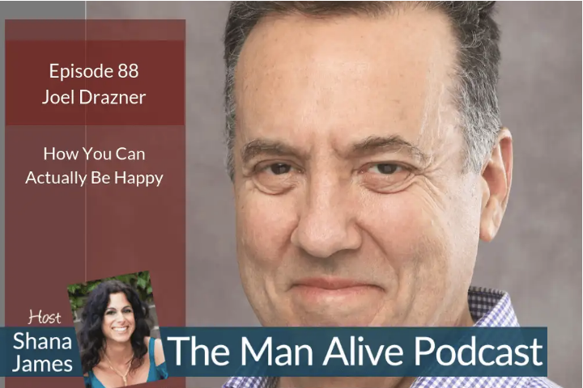

Most people think of resilience as a quality of which they could always use more units. What they don’t see is that who they truly are is the limitless, unbreakable space in which all of their circumstances arise and dissolve without ever impacting them in the process.
HIGH-FUNCTIONAL
INNER PEACE
WITH JOEL DRAZNER, RESILIENCE COACH

Behind all of our experience, no matter how fraught or emotionally charged, there is unlimited inner peace, unconditional loving, and unbreakable resilience.

Happiness
Coach
Happiness is not a distant “Point B,” whose imagined existence makes where we are right now, Point A, an inferior place and time by comparison. Happiness is actually the very stuff of which you are made, and the boundless arena in which all your life activities are carried out.

High-Functional
Inner Peace
It’s a myth that you can’t be highly productive and know peace within. That universally desired peace actually exists behind all circumstances, without exception, and is available without meditating on a mountaintop, and without sacrifice to your job performance.
